/* thomas-ruff - proofs */
12 plates. Deterministic overlays rendered by the composition-analysis skill.
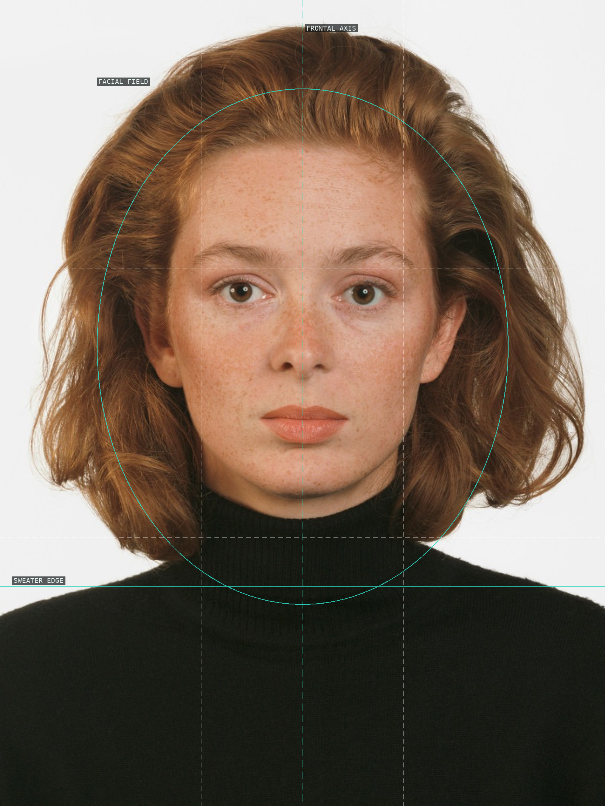
01-portrait-p-lappat-1987
Frontal axis, facial field, and sweater edge.
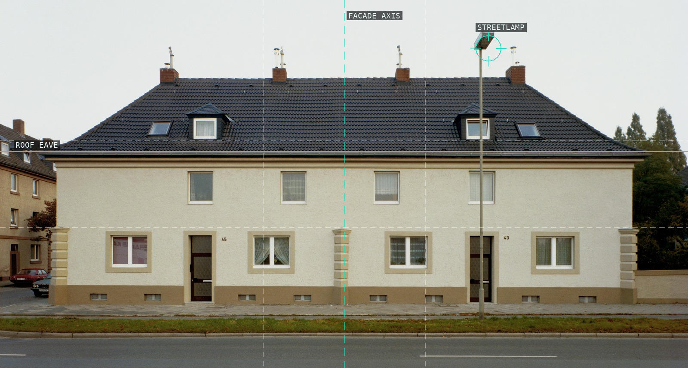
02-house-nr-1-i-1987
Facade axis, roof eave, and streetlamp.
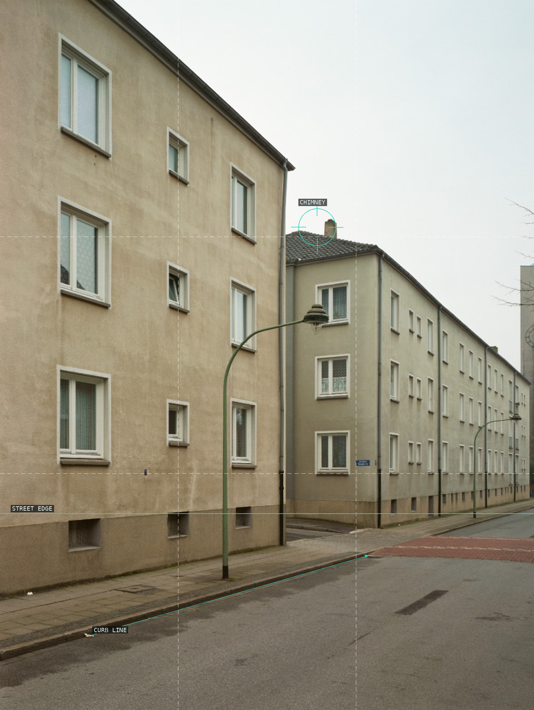
03-house-nr-7-i-1988
Curb line and chimney set a measured recession.
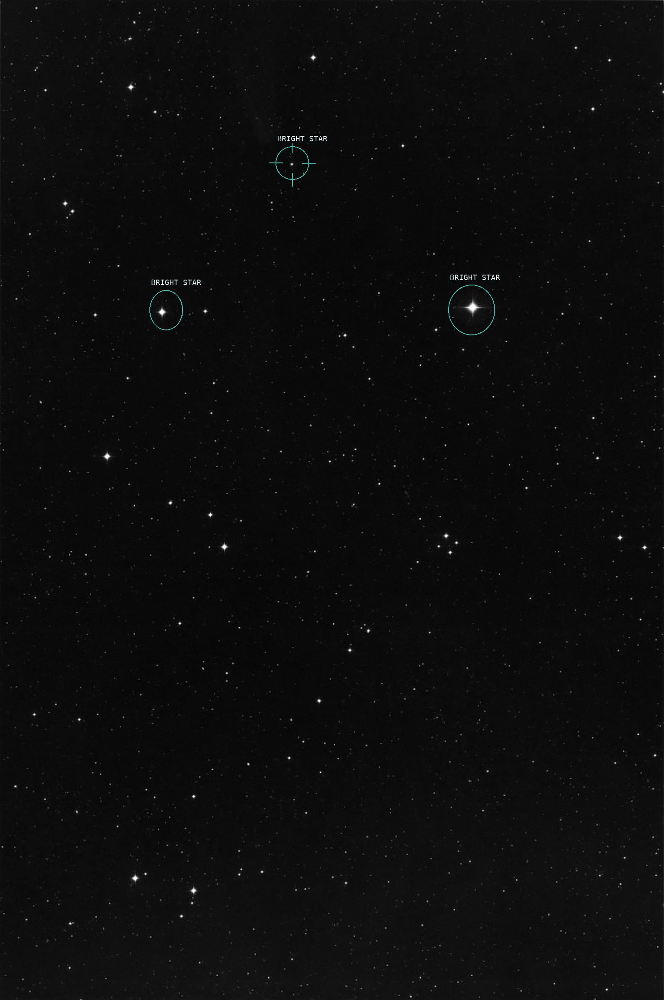
04-00h-00m-minus-20-1990
Bright stars punctuate a dispersed field.
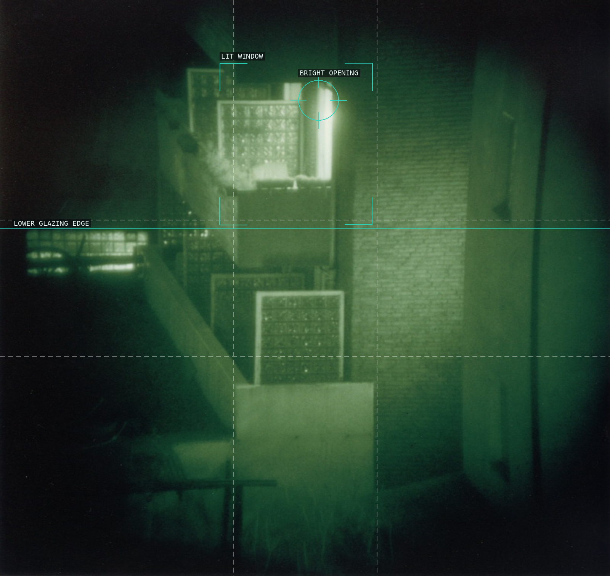
05-nacht-2-i-1992
A lit opening organizes an obscured interior.
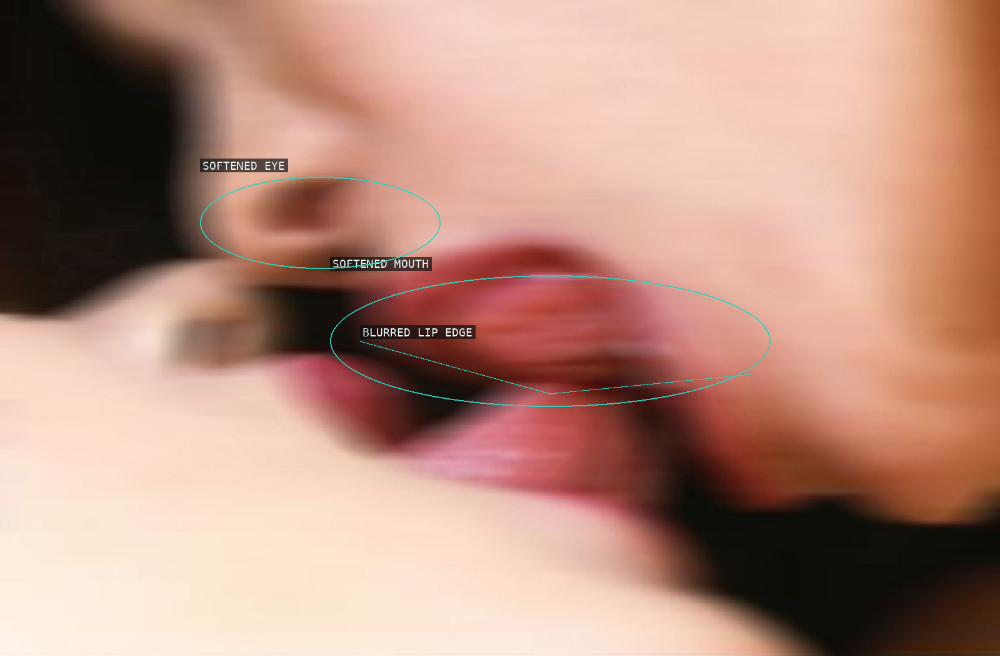
06-nudes-ez14-1999
Blurred eye and mouth retain recognition.
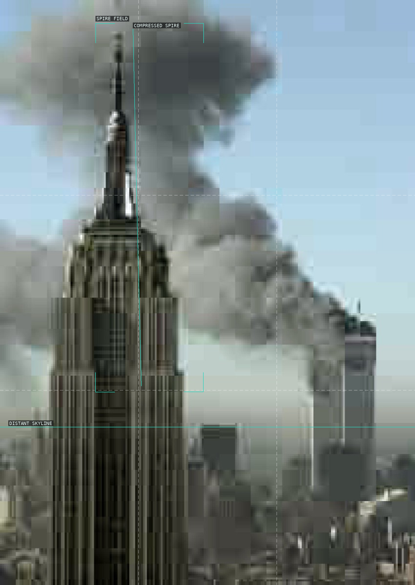
07-jpeg-ny01-2004
A compressed spire holds a blocky skyline.
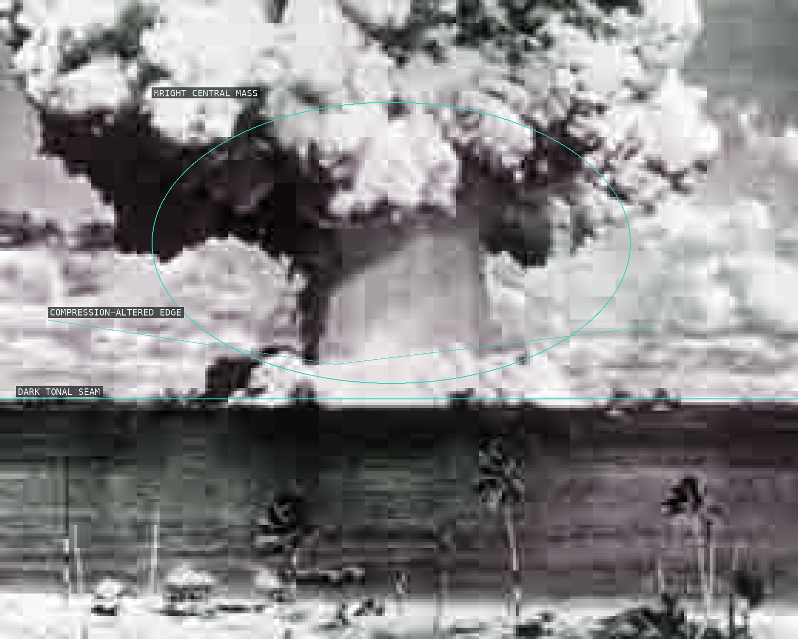
08-jpeg-nt01-2004
Unstable tonal blocks precede scene recognition.
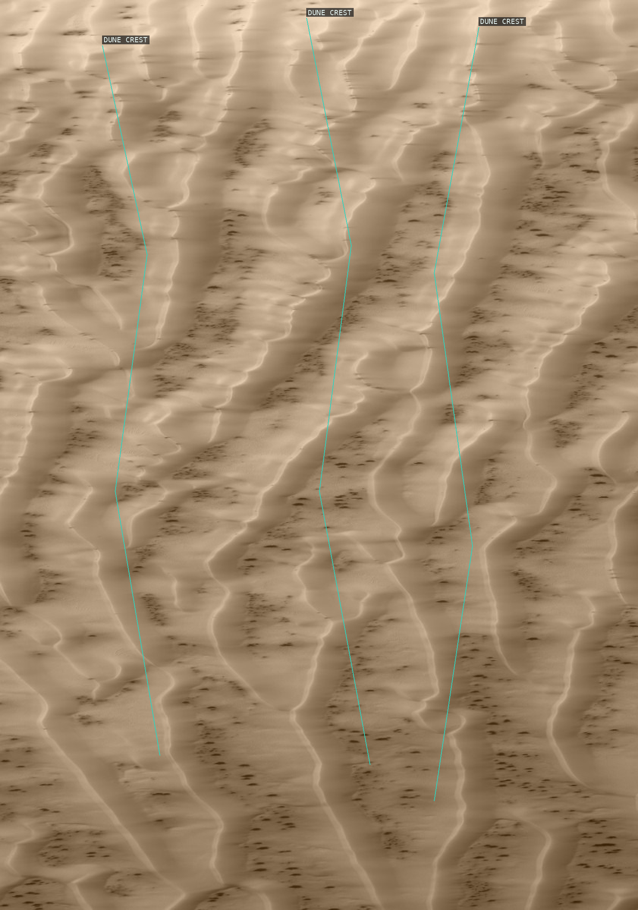
09-ma-r-s-01-2010
Dune crests pace the transformed terrain.
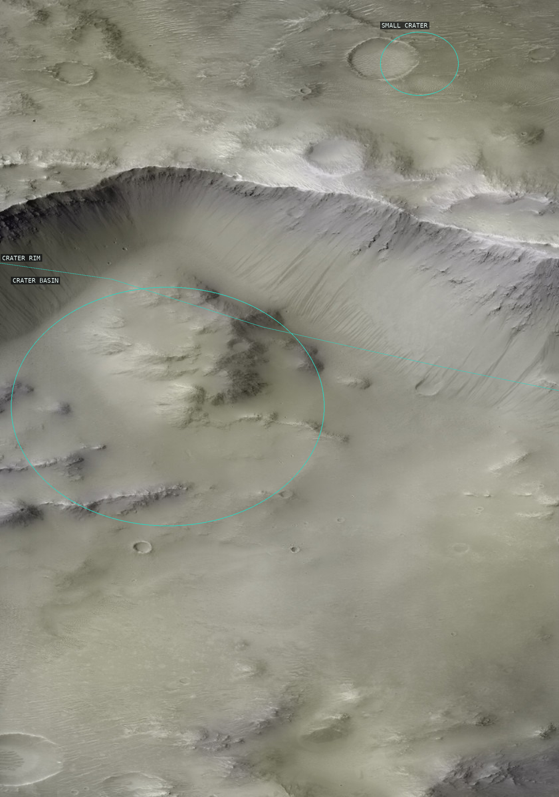
10-ma-r-s-13-2011
Crater rim and basin organize a pale surface.
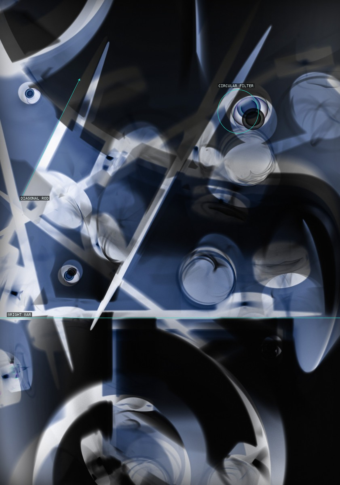
11-phg-05-2012
Rod, bar, and circular filter form a virtual construction.
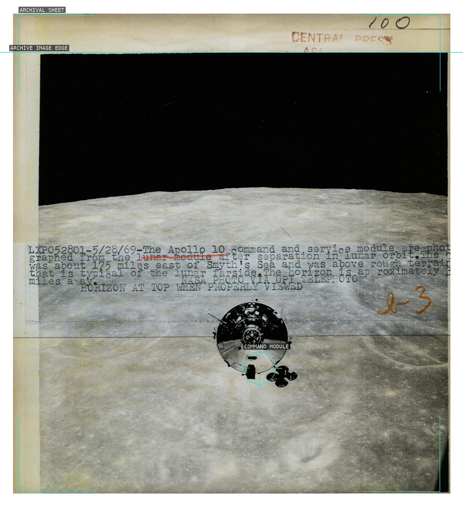
12-press-00-53-2015
Archive sheet and lunar image remain inseparable.